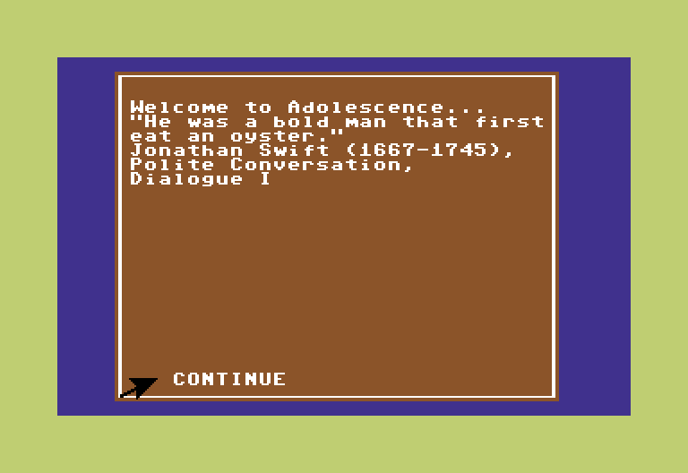
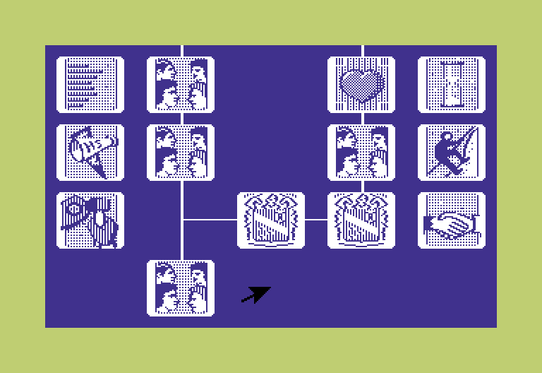

<meta charset="utf-8">
<meta name="viewport" content="width=device-width, initial-scale=1">
<title>Alter Ego</title>
<link rel="preconnect" href="https://fonts.googleapis.com">
<link rel="stylesheet" href="https://fonts.googleapis.com/css2?family=Lato:wght@400;700;900&family=IBM+Plex+Mono:wght@400;500&display=swap">
<style>
:root{
  --bg:#23262d; --paper:#e9e7e1; --surface:#ffffff; --surface-2:#f1efea; --line:#d5d3cc; --line-soft:#e0ded8;
  --ink:#2f3136; --ink-soft:#55585f; --ink-mute:#80838a;
  --link:#1f5fa8; --link-hover:#154480; --accent:#1f5fa8;
  --amber:#c25a00; --cyan:#1f5fa8; --coral:#d04a3a; --green:#2a8a4a; --violet:#4a5bd6; --hl:#fff0c2;
  --chip:#2f3136; --chip-ink:#ffffff;
  --c64blue:#40318d; --c64grey:#686868;
  --fd:'Lato',system-ui,sans-serif; --fb:'Lato',system-ui,sans-serif; --fm:'IBM Plex Mono',ui-monospace,Menlo,monospace;
  --col:1080px; --gx:68px; --fs:17px; --lh:1.6; --hw:900; --h1:46px; --h2:26px; --sy:48px; --pp:26px; --r:10px;
  --plate-shadow:0 1px 2px rgba(0,0,0,.05),0 4px 14px rgba(0,0,0,.05);
}
*{box-sizing:border-box}
html{background:var(--bg);min-height:100%}
body{background:var(--paper);color:var(--ink);font-family:var(--fb);font-size:var(--fs);line-height:var(--lh);max-width:var(--col);margin:0 auto;min-height:100vh;padding:0 0 4rem}
h1,h2,h3{font-weight:var(--hw);letter-spacing:-.01em;text-wrap:balance;color:var(--ink);margin:0}
.wrap{padding:0 var(--gx)}
.hero{padding:48px var(--gx) 8px;text-align:left}
.eyebrow{font-family:var(--fm);font-size:12px;letter-spacing:.08em;text-transform:uppercase;color:var(--ink-mute);margin:0 0 10px}
.hero h1{font-size:var(--h1);line-height:1.15;letter-spacing:-.02em;margin:0 0 14px}
.hero .sub{margin:0 0 .6em;color:var(--ink-soft)}
section{padding:var(--sy) 0 24px}
section:last-of-type{border-bottom:none}
.fig{font-family:var(--fm);font-size:12px;letter-spacing:.08em;text-transform:uppercase;color:var(--ink-mute);margin:0 0 10px}
h2.t{font-size:var(--h2);margin-bottom:12px}
.lede{color:var(--ink-soft);margin:0 0 30px}
.plate{background:var(--surface);border:1px solid var(--line);border-radius:var(--r);padding:var(--pp);box-shadow:var(--plate-shadow)}
.cap{font-size:14px;color:var(--ink-mute);margin-top:14px;line-height:1.55}
.cap b{color:var(--ink);font-weight:700}
code{font-family:var(--fm);font-size:.82em;background:var(--chip);color:var(--chip-ink);border-radius:4px;padding:2px 6px;white-space:nowrap}

</style>

<style>
a{color:var(--link)} a:hover{color:var(--link-hover)}
canvas{display:block;max-width:100%;height:auto;margin:20px auto;background:#16191e;image-rendering:pixelated;border-radius:4px}
label{display:inline-flex;align-items:center;gap:12px;margin:8px 18px 8px 0;flex-wrap:wrap;max-width:100%}
select,input,button{font:inherit;padding:7px;border:1px solid #a7abb2;border-radius:4px;max-width:100%;background:white;color:#252a35}
button{cursor:pointer}button:hover{background:#e4ebf5}input[type=range]{width:190px;accent-color:var(--accent)}
output,.readout{display:block;font:14px/1.6 var(--fm);padding:12px 0;overflow-wrap:anywhere}
.reference{max-width:100%;height:auto;display:block;margin:auto;image-rendering:pixelated}
table{border-collapse:collapse;width:100%;font-size:15px}th,td{text-align:left;padding:9px;border-bottom:1px solid var(--line)}
details{margin:16px 0;padding:12px 16px;background:var(--surface-2);border-radius:6px}summary{cursor:pointer;font-weight:700}
.key{display:inline-block;padding:3px 10px;margin:4px;border-radius:4px;background:#e1e6ed;font-size:14px}
pre{white-space:pre-wrap;overflow-wrap:anywhere;font:13px/1.6 var(--fm);max-height:420px;overflow:auto;background:#16191e;color:#eee;padding:18px}
@media(max-width:650px){:root{--gx:22px;--h1:36px;--sy:32px;--pp:16px}th,td{padding:6px;font-size:13px}}
.score-grid{display:grid;grid-template-columns:repeat(2,minmax(0,1fr));gap:12px 25px}.score-line{display:grid;grid-template-columns:145px 1fr 30px;gap:8px;align-items:center;font-size:14px}.score-line progress{width:100%;accent-color:var(--accent)}.question-text{min-height:3.2em;font-size:19px;font-weight:700}.choices{display:flex;gap:12px;flex-wrap:wrap}.choices button[aria-pressed=true]{background:#1f5fa8;color:white}.formula{font:14px/1.6 var(--fm);overflow-wrap:anywhere}@media(max-width:720px){.score-grid{grid-template-columns:1fr}.score-line{grid-template-columns:140px 1fr 30px}}
.shots{display:grid;grid-template-columns:repeat(2,minmax(0,1fr));gap:16px}.shots figure{margin:0}.shots img{width:100%;height:auto;display:block;image-rendering:pixelated;border-radius:4px}.shots figcaption{font-size:14px;color:var(--ink-mute);margin-top:8px;line-height:1.5}@media(max-width:650px){.shots{grid-template-columns:1fr}}
.time-out{font:15px/1.7 var(--fm)}.time-out b{font-size:20px;color:var(--ink)}
.pc{width:100%;font:13px/1.5 var(--fm);border-collapse:collapse}.pc td{padding:3px 8px;border-bottom:1px solid var(--line-soft);white-space:nowrap}.pc tr.on td{background:var(--hl)}.pc td.c{white-space:normal;color:var(--ink-soft);font-family:var(--fb);font-size:14px}
.regs{display:grid;grid-template-columns:repeat(5,minmax(0,1fr));gap:8px;margin:14px 0;font:14px/1.4 var(--fm)}.regs div{background:var(--surface-2);border-radius:6px;padding:8px}.regs span{display:block;font-size:11px;letter-spacing:.06em;text-transform:uppercase;color:var(--ink-mute)}@media(max-width:650px){.regs{grid-template-columns:repeat(3,minmax(0,1fr))}.pc td{padding:3px 4px}}
.scroll{overflow-x:auto}
</style><!-- tabs -->
<header class="hero"><p class="eyebrow">Commodore 64 · 1986 · Activision</p><h1>Alter Ego</h1><p class="sub">A whole life, from the womb to old age, told one scene at a time. Twenty-five answers set a personality before birth, every scene reads and changes it, and the bigger a scene is on the disk, the more of the life it uses up.</p></header>
<main class="wrap">

<section id="game"><p class="fig">01 · The game</p><h2 class="t">A life on a map of pictures</h2>
<p>Alter Ego plays out one person's life in seven phases: Infancy, Childhood, Adolescence, Young Adulthood, Adulthood, Middle Adulthood and Old Age. A new game asks for a name and then for a personality, answered as twenty-five statements, TRUE or FALSE, or left to the computer. A life can begin in any of the seven phases.</p>
<p>Each phase is a map. Its rows are the years, and each row holds pictures joined by lines: a heart, a pair of people, a book, a body. Choosing a picture plays its scenes: a page of text, then often a question with a few answers to pick with the arrow. What the player answers changes the personality, the money and what comes next, and every scene moves the years on. A phase ends when its years run out or every picture has been played, and the next phase begins.</p>
<div class="shots"><figure><figcaption>Each phase opens with a page of its own.</figcaption></figure><figure><figcaption>Adolescence's map. The pictures down the middle are its scenes; the columns at each side are its choices.</figcaption></figure></div>
<p>The <a href="play.html">Play</a> tab is the whole game, written again in JavaScript. The <a href="levels.html">Stages</a> tab draws every phase's map whole, and <a href="graphics.html">Graphics</a> has the arrow and the bar of sprites that brings each page on.</p>
</section>

<section id="personality" data-part="start"><p class="fig">02 · Personality</p><h2 class="t">An answer moves a trait part of the way to 100 or to 0</h2>
<p>Before birth, the game sets twelve traits to 50 and then applies each answer in turn. An answer can set a trait outright, move it a share of the way still left to 100, or take a share of what it has. Each share is rounded down before the next answer is applied, so the same answers always give the same person. Pick a statement and answer it.</p>
<div class="plate"><label>Statement <select id="question"></select></label><p id="question-text" class="question-text"></p><div class="choices"><button id="answer-true" type="button">TRUE</button><button id="answer-false" type="button">FALSE</button></div><p><button id="all-true" type="button">All TRUE</button> <button id="all-false" type="button">All FALSE</button> <button id="all-chance" type="button">Leave it to chance</button></p><div id="trait-scores" class="score-grid"></div><output id="parenting"></output><details><summary>What this answer does</summary><div id="answer-effects" class="formula"></div></details><p class="cap">Each answer is a record of up to eight changes, in one table for TRUE (<code>$94AE</code>) and one for FALSE (<code>$971F</code>), which the scoring routine applies in order (<code>ScorePersonalityQuestionnaire</code>, <code>$8E29</code>). The game's own routine gives the same twelve scores as this page for sixty sets of answers, among them every single answer turned over. The statements are the game's own words.</p></div>
<p>The two tables never move Intelligence, Physical or Vocational: those three start every life at 50. Statement 22, "My parents were extremely strict disciplinarians", answered TRUE is the only answer that sets a thirteenth number, one the scenes read later. Left to chance, each answer is one bit of the sound chip's noise (the SID's third voice, read at <code>$D41B</code>), so the computer is as likely to answer TRUE as FALSE.</p>
</section>

<section id="map" data-part="life"><p class="fig">03 · The map</p><h2 class="t">Each picture on the map is a block of scenes on the disk</h2>
<p>A phase's map is three 16-bit words to a row, each word a place on the map. Its low byte is the number of a scene block, its next four bits the picture, and its top four bits the lines out of it. The arrow moves over the three places of a row and over the two columns of choices beside the map, and fire plays what is under it (<code>play_life_stage</code>, <code>$84DC</code>). A place that has been played loses its picture and keeps its lines. The <a href="levels.html">Stages</a> tab draws all seven maps and decodes any word on them.</p>
<p>The eight choices are words too. A choice of type 1 shows the age in years and months, type 5 the whole status, and the others play the next of the choice's own scenes. The function keys f1 to f8 pick a choice by its number.</p>
<p>A scene block ends by telling the map what to do next (<code>play_life_map_cell</code>, <code>$8A85</code>):</p>
<div class="plate scroll"><table><thead><tr><th>The block ends with</th><th>What follows</th></tr></thead><tbody>
<tr><td>255, 254 or <code>$FFFF</code></td><td>the picture is crossed off the map</td></tr>
<tr><td>251</td><td>the scene does not count: every number it changed is put back</td></tr>
<tr><td>252</td><td>the choice plays its next scene</td></tr>
<tr><td><code>$FFFD</code></td><td>the profile of traits and possessions</td></tr>
<tr><td>250</td><td>the phase is over</td></tr>
<tr><td>253</td><td>the life is over</td></tr>
</tbody></table><p class="cap">A scene that may not count is possible because the game copies all its shared numbers to <code>$8145</code> before every block and copies them back on 251.</p></div>
<p>A phase also ends when the age passes the phase's last year or when no picture is left. The block behind the phase's choice of type 5 then plays as its closing scene, and the menu that ends every phase asks whether to go on, save or quit (<code>finish_life_stage</code>, <code>$8CFF</code>).</p>
</section>

<section id="time" data-part="life"><p class="fig">04 · Time</p><h2 class="t">A scene's size on the disk is the time it takes</h2>
<p>Each block's length in bytes is in the phase's header, so that the game can find the block in the file. The same length moves the years on: the game multiplies it by a rate in the header and adds the result to the age, as a fraction of a year (<code>advance_age_and_finances</code>, <code>$91CD</code>). A choice's scene counts a third of its length. The later phases have higher rates, so the same scene takes a few weeks of Infancy and several months of Middle Adulthood. Pick a phase and a block.</p>
<div class="plate"><label>Phase <select id="t-stage"></select></label><label>Block <input id="t-block" type="range" min="1" max="35" value="1"></label><label><input id="t-choice" type="checkbox"> played as a choice</label><output id="t-out" class="time-out"></output><p class="cap">The rate is the third word of the phase's header (<code>$803F</code>, read by <code>load_stage_header</code>). The time added is (length × rate + 512) ÷ 1,024, in 65,536ths of a year, kept at <code>$7FC4</code>; each whole year carried out of it adds one to the age at <code>$7F74</code>. The lengths are the phases' own, from the headers on the disks.</p></div>
<p>The same fraction pays the wages. A job's salary is multiplied by the time the scene took, less a tax, and without a job the cost of living is taken instead. The cash and the debt are kept as thousands and units in two words each, worked out in 32 bits and divided back by 1,000.</p>
</section>

<section id="scenes" data-part="life"><p class="fig">05 · Scenes</p><h2 class="t">Every scene reads and changes one table of numbers about the player</h2>
<p>The whole of a life is 64 numbers of 16 bits at <code>$7F40</code>, which the game calls on in every scene and saves to the disk. The first twelve are the traits the questionnaire set. The others hold the job, the age, the money and what has happened in the life.</p>
<div class="plate scroll"><table><thead><tr><th>Number</th><th>Address</th><th>What it holds</th></tr></thead><tbody>
<tr><td>0 to 11</td><td><code>$7F40</code></td><td>the twelve traits, 0 to 100, from Calmness to Vocational</td></tr>
<tr><td>12</td><td><code>$7F58</code></td><td>the job, 0 for none</td></tr>
<tr><td>26</td><td><code>$7F74</code></td><td>the age in years</td></tr>
<tr><td>27 and 28</td><td><code>$7F76</code></td><td>the cash, units and thousands</td></tr>
<tr><td>33 and 34</td><td><code>$7F82</code></td><td>the debt, units and thousands</td></tr>
<tr><td>36</td><td><code>$7F88</code></td><td>a possession about to be bought</td></tr>
<tr><td>37</td><td><code>$7F8A</code></td><td>the salary</td></tr>
<tr><td>49</td><td><code>$7FA2</code></td><td>set by statement 22, strict parents</td></tr>
</tbody></table></div>
<p>A scene is a chain of descriptors, and each descriptor is played in the same order (<code>interpret_interaction_descriptor</code>, <code>$9BF9</code>). First come its conditions: five bytes each, a number's index and the lowest and highest value it may have. A descriptor whose conditions fail is not played: the chain goes on to the descriptor its second byte names, and when the first of a block fails, the game shows the profile of traits instead. Then come its changes to the numbers, four bytes each, then the answers the player may pick, then the text. Some changes are left to chance, by the same sound-chip noise as the questionnaire's, and the answer picked decides which descriptor plays next. The <a href="play.html">Play</a> tab runs these descriptors as the game does.</p>
</section>

<section id="text" data-part="life"><p class="fig">06 · Text</p><h2 class="t">Scene text is packed with a dictionary that grows as it is read</h2>
<p>The scenes' text is packed with LZW, a method that replaces each repeated run of letters with a number for an earlier run. The game reads the numbers eight at a time, each group nine or ten bytes long, so that each number is nine or ten bits. The first 256 numbers are single bytes. Each number read adds a new run to the dictionary, up to 1,024 runs. Only the first two numbers of a scene are nine bits wide: as soon as the first new run is added the numbers become ten bits wide, and the game starts a fresh group of ten bytes and throws away the six unused numbers of the first one.</p>
<div class="plate scroll"><table><thead><tr><th>Scene 26 of Infancy's file</th><th>Size</th></tr></thead><tbody><tr><td>numbers read</td><td>4,130</td></tr><tr><td>packed bytes read</td><td>5,169</td></tr><tr><td>bytes of text and descriptors made</td><td>7,872</td></tr><tr><td>descriptors</td><td>39</td></tr><tr><td>dictionary, prefixes and last bytes</td><td>3,072</td></tr></tbody></table><p class="cap">A decoder written apart from the game's reads scene 26 of MAP1 to the same 7,872 bytes and the same dictionary as the game's own (<code>decompress_grouped_lzw_slice</code>, <code>$A4F7</code>; the prefixes from <code>$B57B</code>, the last bytes from <code>$BD7B</code>). The game decodes only the descriptor it needs, into <code>$C2A2</code> (<code>load_local_map_chunk</code>, <code>$9A14</code>).</p></div>
</section>

<section id="death" data-part="life"><p class="fig">07 · The end</p><h2 class="t">After Old Age a new life begins</h2>
<p>A life ends in one of two ways: a scene that ends with 253, or the end of Old Age. Either way the game moves on to the phase after the seventh, which is Infancy again. The new life keeps the twelve traits and the name and clears almost everything else. <a href="discoveries.html#new-life">Discoveries</a> has the end of a life played out on the original program, and what the next one inherits.</p>
</section>

<section id="pcode" data-part="main"><p class="fig">08 · The program</p><h2 class="t">Most of Alter Ego is written for a machine that is not a 6502</h2>
<p>Most of the game was compiled for a stack machine of 16-bit numbers, which the C64 does not have. A small 6502 program, the interpreter at <code>$7033-$7926</code>, plays that machine's part: it reads each one-byte instruction and jumps to its handler through two tables of 256 addresses (<code>$7927</code> and <code>$7A27</code>). The instructions work on two registers, a first value and a second, and on a stack of locals and arguments. There are 90 of these procedures in the three loads, and the slow work is left to 6502 code: drawing, the disk, the text decoder and 32-bit arithmetic.</p>
<p>The procedure below is the game's pause, called each time the arrow moves in a menu and after a choice is made: it counts to its argument divided by 16 and does nothing else (<code>delay_scaled_iterations</code>, <code>$545B</code>). Step through its 18 instructions.</p>
<div class="plate"><label>Argument <select id="pc-n"><option value="48">48</option><option value="100">100</option><option value="5000">5,000, as the menus give it</option></select></label> <button id="pc-step" type="button">Step</button> <button id="pc-run" type="button">Run to the end</button> <button id="pc-reset" type="button">From the top</button>
<div class="regs"><div><span>first value</span><b id="r-p">0</b></div><div><span>second value</span><b id="r-s">0</b></div><div><span>argument n</span><b id="r-n">0</b></div><div><span>local i</span><b id="r-i">0</b></div><div><span>instructions</span><b id="r-c">0</b></div></div>
<div class="scroll"><table class="pc" id="pc"></table></div>
<p class="cap">The bytes are the game's, from <code>$5460</code> to <code>$5478</code>. In C the procedure would read: <code>n = n / 16; for (i = 0; i &lt; n; i++);</code>. Each turn of the loop costs eight instructions, and the instruction after the store (<code>$546E</code>) makes the value of <code>i++</code> the old <code>i</code> again, a value nothing uses.</p></div>
</section>

<section id="saving" data-part="main"><p class="fig">09 · Saving</p><h2 class="t">A saved life is 380 bytes</h2>
<p>The game keeps five lives on the disk, in the files AES0 to AES4, and a directory of them in AESD: five lines of 32 bytes, each the name and the age. One routine reads and writes a save (<code>transfer_save_slot_state</code>, <code>$4E0F</code>), handed either the read or the write as an argument, so the two can never disagree about the order:</p>
<div class="plate scroll"><table><thead><tr><th>Bytes</th><th>From</th><th>What</th></tr></thead><tbody>
<tr><td>128</td><td><code>$7F40</code></td><td>the 64 numbers about the player</td></tr>
<tr><td>48</td><td><code>$81C5</code></td><td>the phase's eight choices</td></tr>
<tr><td>180</td><td><code>$81F7</code></td><td>the phase's map, with what has been played crossed off</td></tr>
<tr><td>16</td><td><code>$82CB</code></td><td>the name</td></tr>
<tr><td>2</td><td><code>$82BD</code></td><td>the phase</td></tr>
<tr><td>2</td><td><code>$82AB</code></td><td>the possessions, one bit each</td></tr>
<tr><td>4</td><td><code>$7FC0</code></td><td>which scenes of the lifelong choices have been played, one bit each</td></tr>
</tbody></table></div>
<p>The months since the last birthday, kept at <code>$7FC4</code> just after them, are not saved, so a resumed life starts again at its birthday (<a href="discoveries.html#months">Discoveries</a>).</p>
</section>
</main>
<script>
const scoreRecords=[[[[1,10,50],[1,9,30],[1,0,10],[1,8,20],[1,3,10]],[[2,9,20],[2,8,10],[2,1,20]],[[2,9,20],[2,0,30]],[[2,4,60],[2,9,30]],[[2,5,40],[2,8,30],[2,1,20]],[[2,10,30],[1,8,50],[2,9,10],[2,0,10]],[[2,9,60],[2,4,0]],[[1,1,50],[1,5,30],[1,8,20]],[[2,1,30],[2,4,20]],[[2,1,30],[2,8,20],[2,2,10]],[[2,5,40]],[[2,10,20],[2,9,50]],[[1,2,40],[2,4,20]],[[1,3,30],[2,0,30],[2,1,30]],[[2,1,80],[2,0,40],[2,8,60]],[[2,9,20]],[[2,9,10],[2,10,10],[1,8,50],[1,1,20]],[[2,2,20],[2,4,20],[2,8,10]],[[2,0,20],[2,2,10]],[[2,3,10]],[[2,8,20],[2,1,10]],[[2,3,20],[0,49,1]],[[2,8,10],[1,1,10],[2,9,10]],[[2,4,30]],[[2,4,20]]],[[[2,10,20],[2,9,10],[2,3,10]],[[2,0,10],[1,8,20],[1,9,30]],[[1,1,20],[1,0,30]],[[1,4,30],[1,8,10]],[[1,5,40],[1,8,30],[1,1,10]],[[1,5,20],[2,8,10],[1,4,20]],[[2,0,10],[1,9,20],[1,4,10]],[[2,1,40],[2,5,20],[2,8,20]],[[1,1,40],[1,4,30]],[[1,1,30],[1,8,20],[1,2,10]],[[1,5,40]],[[1,9,20]],[[2,2,10],[1,4,20],[2,0,10],[1,8,20]],[[1,2,20],[1,1,20]],[],[[1,9,20]],[[1,9,30],[1,10,20],[1,8,10]],[[1,2,40]],[[1,0,20],[1,8,30],[1,2,20]],[[1,3,30]],[[1,8,20],[1,2,20]],[[1,3,30]],[[1,8,30],[1,9,30]],[[1,4,20]],[[1,4,20]]]],questions=["I will probably try to answer these questions honestly.","I am likely to speak whatever comes to mind.","I am a light sleeper who stirs at even the slightest sound.","Revenge is sweet.","I often feel slow, tired, and down in the dumps.","An important part of every job is knowing who to impress.","I am fascinated by car accidents and other disaster scenes.","The people who know me best like me as a person.","I am extremely sensitive to criticism.","I get nervous performing in front of people, even when the task is something I know by heart.","The people around me seem to be happier than me.","When I see a \"Wet Paint\" sign, I always want to touch to find out if it's really wet.","When I am ill, I become short- tempered and snap at people.","On important matters, I usually follow my parents' advice, even when I disagree with it.","It is possible that we live in a world where people watch our every move.","When I am in a quiet place I get the urge to scream.","It is O.K. to tell a white lie if it is guaranteed to bring great personal gain.","It is often pointless to try to discuss problems with another person.","I am easily embarrassed.","Children should be seen and not heard.","I find it difficult to break the ice in conversations with people I barely know.","My parents were extremely strict disciplinarians.","You can usually judge a person by first impressions.","One way of getting people to treat you fairly is to take an aggressive stance and make them win you over.","I think questions like this are stupid and meaningless."],traitNames=["Calmness","Confidence","Expressiveness","Familial","Gentleness","Happiness","Intelligence","Physical","Social","Thoughtfulness","Trustworthiness","Vocational"];
const answers=Array(25).fill(1);
function calculatePersonality(values){const state=Array(64).fill(0);state.fill(50,0,12);for(let i=0;i<25;i++)for(const [op,index,magnitude] of scoreRecords[values[i]===1?0:1][i]){const old=state[index];state[index]=(op===0?magnitude:op===1?old+Math.floor((100-old)*magnitude/100):old-Math.floor(old*magnitude/100))&65535;}return state;}
const qSelect=document.getElementById('question');questions.forEach((q,i)=>{const o=document.createElement('option');o.value=i;o.textContent=`${i+1} of 25`;qSelect.append(o);});
function renderPersonality(){const i=Number(qSelect.value),s=calculatePersonality(answers);document.getElementById('question-text').textContent=questions[i];for(const [id,value] of [['answer-true',1],['answer-false',2]])document.getElementById(id).setAttribute('aria-pressed',String(answers[i]===value));const holder=document.getElementById('trait-scores');holder.replaceChildren();traitNames.forEach((name,index)=>{const row=document.createElement('div');row.className='score-line';const label=document.createElement('span');label.textContent=name;const bar=document.createElement('progress');bar.max=100;bar.value=s[index];bar.setAttribute('aria-label',`${name}: ${s[index]}`);const value=document.createElement('span');value.textContent=s[index];row.append(label,bar,value);holder.append(row);});document.getElementById('parenting').textContent=`Number 49, strict parents: ${s[49]}`;document.getElementById('answer-effects').textContent=scoreRecords[answers[i]===1?0:1][i].map(([op,index,m])=>`${traitNames[index]||'Number '+index}: ${op===0?'set to '+m:op===1?'up by '+m+'% of the way left to 100':'down by '+m+'% of what it has'}`).join('; ')||'nothing';}
qSelect.addEventListener('change',renderPersonality);for(const [id,value]of [['answer-true',1],['answer-false',2]])document.getElementById(id).addEventListener('click',()=>{answers[Number(qSelect.value)]=value;renderPersonality();});for(const [id,value]of [['all-true',1],['all-false',2]])document.getElementById(id).addEventListener('click',()=>{answers.fill(value);renderPersonality();});
document.getElementById('all-chance').addEventListener('click',()=>{for(let i=0;i<25;i++)answers[i]=1+(Math.random()<.5?0:1);renderPersonality();});renderPersonality();

// time: each phase's rate ($803F in its header) and its scene blocks' lengths, from the headers
const STAGES=[{"name":"Infancy","ages":[0,3],"rate":3862,"blocks":[[1,2446],[3,1876],[4,3568],[5,1542],[6,2726],[7,2754],[8,3894],[9,6326],[10,3600],[11,1296],[12,1644],[13,1940],[14,1300],[15,2488],[16,1808],[17,2502],[18,2056],[19,1250],[20,1538],[21,2032],[22,1552],[23,4188],[24,1176],[25,2126],[26,1170],[27,5256],[28,3410],[29,2210],[30,2318],[31,4820],[32,1722],[33,3320],[34,2078],[35,2436]]},{"name":"Childhood","ages":[4,12],"rate":8257,"blocks":[[1,1956],[3,2972],[4,2178],[5,1374],[6,3476],[7,1592],[8,1634],[9,3048],[10,2522],[11,1320],[12,1818],[13,934],[14,1550],[15,1150],[16,2094],[17,2142],[18,1996],[19,1822],[20,864],[21,1064],[22,1210],[23,2510],[24,1510],[25,818],[26,1094],[27,2986],[28,1336],[29,1576],[30,1718],[31,858],[32,1874],[33,1492],[34,1324],[35,2070],[36,1494],[37,1542],[38,1616],[39,2270],[40,1210],[41,1274],[42,2502],[43,1140],[44,1474],[45,2580],[46,3488],[47,2102],[48,1390],[49,2154],[50,1778],[51,1064],[52,2738],[53,2044],[54,1674],[55,2184],[56,216]]},{"name":"Adolescence","ages":[13,18],"rate":5888,"blocks":[[1,1224],[3,978],[4,422],[5,412],[6,1114],[7,982],[8,1254],[9,1064],[10,2762],[11,570],[12,886],[13,832],[14,1662],[15,534],[16,516],[17,434],[18,440],[19,762],[20,730],[21,710],[22,812],[23,680],[24,854],[25,648],[26,478],[27,970],[28,1868],[30,2816],[31,486],[32,306],[33,838],[34,792],[35,562],[36,518],[37,324],[38,568],[39,604],[40,484],[41,504],[42,280],[43,644],[44,440],[45,454],[46,490],[47,790],[48,504],[49,874],[51,2848],[52,2608],[53,2642],[54,1114],[55,1146],[56,2686],[57,1646],[58,1462],[59,1446],[60,1374],[61,612],[62,1106],[63,1566],[64,1068],[66,30],[67,936],[68,1610],[69,662],[70,1224],[71,746],[72,2884],[73,790],[74,820],[75,950],[76,846],[77,1210],[78,1686],[79,546],[80,730],[81,974],[82,1338],[84,1012],[85,2122],[86,1522],[87,3208],[88,1940],[89,1724],[90,1032],[91,1576],[92,3436],[93,1496],[94,892],[95,1056],[96,1488],[97,876],[98,1298],[99,2654],[100,1744],[101,902],[102,1662],[103,1790],[104,2768],[105,846],[106,1288],[107,1144],[108,2872],[109,1558],[110,1474],[111,2244],[112,1744],[113,1174],[114,828],[115,1466],[116,1544],[117,1396],[118,1458],[119,2386],[120,3586],[121,3120],[122,950],[123,2708],[124,192]]},{"name":"Young Adulthood","ages":[18,30],"rate":18279,"blocks":[[1,3018],[3,2166],[4,1938],[5,856],[6,1472],[7,1042],[8,996],[9,1500],[10,2032],[11,1186],[12,1032],[13,926],[14,1160],[15,440],[17,8044],[18,1806],[19,1050],[20,756],[21,1932],[22,1044],[23,848],[24,1140],[25,876],[27,2592],[28,706],[29,610],[30,732],[31,418],[32,810],[34,4916],[35,666],[36,894],[37,588],[38,606],[39,596],[40,1088],[41,706],[42,722],[43,762],[44,1232],[46,3058],[47,1114],[48,888],[49,1038],[50,706],[51,822],[52,952],[53,806],[54,558],[56,5684],[58,2916],[60,2214],[61,1644],[62,1916],[63,4586],[64,3784],[65,2582],[66,3244],[67,1732],[68,2406],[69,818],[70,2068],[71,1860],[72,2252],[73,1620],[74,1322],[75,1400],[76,3030],[77,2350],[78,2094],[79,940],[80,1802],[81,2066],[82,2434],[83,1460],[84,1360],[85,2054],[86,2082],[87,2634],[88,1376],[89,1188],[90,1438],[91,1094],[92,3024],[93,150]]},{"name":"Adulthood","ages":[31,45],"rate":21423,"blocks":[[1,3018],[3,716],[5,8044],[6,2390],[7,988],[8,2148],[9,2170],[10,4128],[11,1222],[12,2102],[14,2704],[16,4916],[17,666],[18,894],[19,588],[20,606],[21,596],[22,1088],[23,706],[24,722],[25,762],[26,1232],[27,678],[28,1266],[29,1796],[30,3022],[31,694],[32,644],[34,3024],[35,1816],[36,1752],[37,602],[38,3234],[39,2306],[40,658],[41,1726],[43,5684],[45,2916],[47,5054],[48,996],[49,1874],[50,1662],[51,1432],[52,3312],[53,3070],[54,3026],[55,3368],[56,2918],[57,4176],[58,2040],[59,626],[60,5492],[61,2066],[62,1172],[63,1796],[64,2836],[65,2108],[66,1246],[67,2620],[68,1490],[69,1776],[70,1692],[71,1808],[72,3614],[73,238],[74,2934]]},{"name":"Middle Adulthood","ages":[46,64],"rate":27136,"blocks":[[1,3018],[3,716],[5,7692],[6,2942],[7,1542],[8,1014],[9,3580],[10,1500],[11,3480],[13,2432],[15,4916],[16,666],[17,894],[18,588],[19,606],[20,596],[21,1088],[22,706],[23,722],[24,762],[25,1232],[26,678],[27,1266],[28,1796],[29,3022],[30,694],[31,644],[33,2984],[34,1588],[35,3036],[36,1612],[37,1144],[38,990],[39,1274],[40,1214],[42,5684],[44,2916],[46,3276],[47,2688],[48,1412],[49,1498],[50,2694],[51,1916],[52,2514],[53,2228],[54,2266],[55,2912],[56,1018],[57,3840],[58,1996],[59,2488],[60,6022],[61,2578],[62,4414],[63,1878],[64,1570],[65,2890],[66,3438],[67,2770],[68,2390],[69,2468],[70,3498],[71,2426],[72,246]]},{"name":"Old Age","ages":[65,74],"rate":14396,"blocks":[[1,716],[3,7692],[4,1036],[5,1932],[6,2588],[7,1776],[8,1244],[12,2984],[13,2240],[14,2212],[15,2340],[16,2202],[17,2106],[19,5684],[21,2916],[23,678],[24,1568],[25,920],[26,1104],[27,2110],[28,1834],[29,860],[30,1636],[31,1036],[32,1334],[33,968],[34,1578],[35,2038],[36,1938],[37,2154],[38,1298],[39,1510],[40,1324],[41,174]]}];
const tStage=document.getElementById('t-stage'),tBlock=document.getElementById('t-block'),tChoice=document.getElementById('t-choice');
STAGES.forEach((s,i)=>{const o=document.createElement('option');o.value=i;o.textContent=`${i+1}: ${s.name}, ages ${s.ages[0]} to ${s.ages[1]}`;tStage.append(o);});
tStage.value=2;
function renderTime(reset){const s=STAGES[Number(tStage.value)];if(reset){tBlock.max=s.blocks.length;tBlock.value=Math.ceil(s.blocks.length/2);}const b=Number(tBlock.value),num=s.blocks[b-1][0],raw=s.blocks[b-1][1],len=tChoice.checked?Math.floor(raw/3):raw,part=Math.floor((len*s.rate+512)/1024),days=part/65536*365.25;const when=days<60?`${Math.round(days)} days`:`${(days/30.44).toFixed(1)} months`;
document.getElementById('t-out').innerHTML=`Block ${num} of ${s.name}: ${raw.toLocaleString('en-GB')} bytes${tChoice.checked?`, a third of it ${len.toLocaleString('en-GB')}`:''}<br>× rate ${s.rate.toLocaleString('en-GB')} → ${part.toLocaleString('en-GB')} of 65,536ths of a year<br><b>about ${when}</b>`;}
tStage.addEventListener('change',()=>renderTime(true));tBlock.addEventListener('input',()=>renderTime(false));tChoice.addEventListener('change',()=>renderTime(false));renderTime(true);

// the pause, delay_scaled_iterations ($545B): its 18 instructions, stepped
const PC=[[0x5460,'89 10','ldp #16','first value = 16'],[0x5462,'CD','swap','swap the two values: the second is now 16'],[0x5463,'0C','ldp A+8','first value = the argument n'],[0x5464,'B6','divs','first value = n ÷ 16'],[0x5465,'2C','stp A+8','n = first value'],[0x5466,'40','ldp #0','first value = 0'],[0x5467,'2B','stp L-2','i = 0'],[0x5468,'D6 6F 54','jmp $546F','to the test'],[0x546B,'0B','ldp L-2','first value = i'],[0x546C,'D0','inc','add 1'],[0x546D,'2B','stp L-2','i = first value'],[0x546E,'D1','dec','take 1 off again: the old i'],[0x546F,'0B','ldp L-2','first value = i'],[0x5470,'1C','lds A+8','second value = n'],[0x5471,'C2','lt','first value = 1 if i < n, else 0'],[0x5472,'D8 78 54','jz $5478','when it is 0, to the end'],[0x5475,'D6 6B 54','jmp $546B','round again'],[0x5478,'CF','ret','return']];
const hex=a=>'$'+a.toString(16).toUpperCase();
const pcTable=document.getElementById('pc');PC.forEach(([a,b,t,c])=>{const tr=document.createElement('tr');tr.innerHTML=`<td>${hex(a)}</td><td>${b}</td><td>${t}</td><td class="c">${c}</td>`;pcTable.append(tr);});
let vm;
const s16=v=>(v&0x8000?v-65536:v);
function vmReset(){vm={at:0,p:0,s:0,n:Number(document.getElementById('pc-n').value),i:0,count:0,done:false};vmShow();}
function vmStep(){if(vm.done)return;const [a,,t]=PC[vm.at];vm.count++;let next=vm.at+1;
 switch(t){case 'ldp #16':vm.p=16;break;case 'swap':[vm.p,vm.s]=[vm.s,vm.p];break;case 'ldp A+8':vm.p=vm.n;break;case 'divs':vm.p=Math.trunc(s16(vm.p)/s16(vm.s))&65535;break;case 'stp A+8':vm.n=vm.p;break;case 'ldp #0':vm.p=0;break;case 'stp L-2':vm.i=vm.p;break;case 'jmp $546F':next=12;break;case 'ldp L-2':vm.p=vm.i;break;case 'inc':vm.p=(vm.p+1)&65535;break;case 'dec':vm.p=(vm.p-1)&65535;break;case 'lds A+8':vm.s=vm.n;break;case 'lt':vm.p=s16(vm.p)<s16(vm.s)?1:0;break;case 'jz $5478':if(!vm.p)next=17;break;case 'jmp $546B':next=8;break;case 'ret':vm.done=true;next=17;break;}
 vm.at=next;}
function vmShow(){for(const [id,v] of [['r-p',vm.p],['r-s',vm.s],['r-n',vm.n],['r-i',vm.i],['r-c',vm.count]])document.getElementById(id).textContent=v.toLocaleString('en-GB');[...pcTable.rows].forEach((r,k)=>r.classList.toggle('on',k===vm.at&&!vm.done));document.getElementById('pc-step').disabled=vm.done;document.getElementById('pc-run').disabled=vm.done;}
document.getElementById('pc-step').addEventListener('click',()=>{vmStep();vmShow();});
document.getElementById('pc-run').addEventListener('click',()=>{while(!vm.done)vmStep();vmShow();});
document.getElementById('pc-reset').addEventListener('click',vmReset);document.getElementById('pc-n').addEventListener('change',vmReset);vmReset();
</script>
